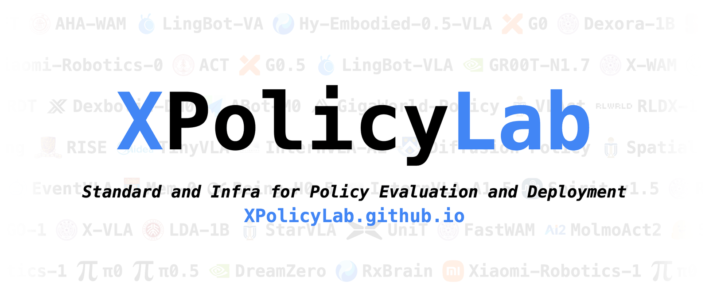
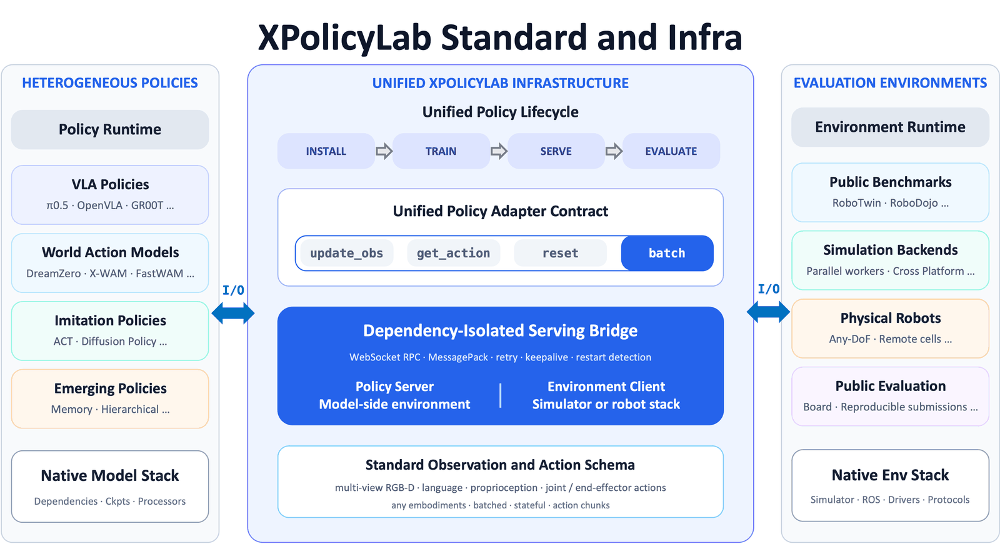
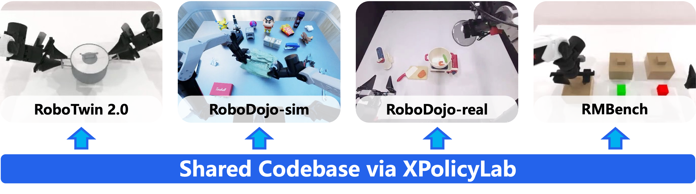

XPolicyLab
A Unified Standard and Open Ecosystem for Robot Policy Evaluation and Deployment
Connecting N policies to M evaluation environments — from O(NM) down to O(N+M).

What is this project
Robot policy evaluation and deployment remain fragmented by model-specific software dependencies, data representations, and runtime interfaces, so connecting N policies to M environments costs O(NM) separate integrations. XPolicyLab is a unified standard and open ecosystem that reduces this to O(N+M).
It specifies common observation, action, and trajectory schemas together with a minimal adapter interface for observation updates, action prediction, batched execution, and episode reset. A dependency-isolated client/server architecture separates policy inference from environment execution, so each side retains its native stack and may run locally or remotely.
As of August 2026, the ecosystem integrates 42 robot policies and standardizes installation, debugging, serving, and evaluation. The same adapters serve RoboTwin, RoboDojo simulation, and standardized real-robot evaluation.

Supported Policies
42 policies are currently integrated, spanning VLA, world-action, imitation-learning, and memory-augmented families. Click any model to view its adapter.
Supported Benchmarks
XPolicyLab is benchmark-agnostic: any benchmark, simulator, or real-robot setup can plug in as an environment client against the same policy-side interface — one adapter per policy, one client per environment. Two public benchmarks are already integrated, and their official leaderboards are powered by XPolicyLab submissions.
- RoboTwin 2.0 Leaderboard — bimanual manipulation across 50 tasks under clean and randomized settings; results reproduced via the XPolicyLab standard interface.
- RoboDojo-sim Leaderboard — 42 simulation tasks across five capability dimensions: Generalization, Precision, Long-Horizon, Memory, and Open.
- RoboDojo-real Leaderboard — 18 physical tasks across three bimanual embodiments: ARX X5, Piper, and Piper X.

How to contribute a policy
Community policies are welcome — open a PR that adds policy/<POLICY>/.
A PR is also required for the official RoboDojo and RoboTwin leaderboards, with a checkpoint
that reproduces your results. See
Submit Your Policy
and
CONTRIBUTING.md.
- Follow the standard adapter layout for install / data / train / eval; eval-only is allowed with a training-release timeline.
- Write the policy README so the shared script conventions work; use
policy/demo_policy. - Run the closed loop locally — at least
EVAL_ENV_TYPE=debug; ideally also simulator-backed eval. - Attach a checkpoint download script for leaderboard evaluation (Hugging Face or ModelScope preferred).
git clone https://github.com/XPolicyLab/XPolicyLab.git
cd XPolicyLab && pip install -e .
bash scripts/create_policy.sh <POLICY_NAME>
cd policy/<POLICY_NAME>
export EVAL_ENV_TYPE=debug
bash eval.sh RoboDojo stack_bowls <ckpt_name> arx_x5 joint 0 0 0 \
<policy_env> baseWhat skills are needed
- Python & deep learning: read the upstream model’s inference API and load checkpoints.
- Linux / shell: set up conda/uv environments and run install.sh / eval.sh.
- Robotics basics: understand observation / action spaces (joint / ee), cameras, and frames.
- Agent (optional): the repo ships Cursor Agent Skills that scaffold, implement, and audit adapters.
In a controlled study, following the standard reduces π0.5 → RoboDojo integration from over five hours to about two hours, and packaged agent skills reduce it further to about thirty minutes.
Contributors
Last updated: 2026.8.11
XPolicyLab is a collaborative open-source project led by MMLab@HKU and THU, with project leadership provided by Tianxing Chen. The complete list of contributors and their policy integrations is provided below.
Core Lead Authors
Tianxing Chen, Yue Chen, Tian Nian, Zijian Cai, Guangyu Chen, Wenwei Lin, Qiwei Liang and Zanxin Chen.
Contributors
Peicheng Xiang, Kailun Su, Zixuan Li, Junyuan Tang, Yan Qin, Qiangyu Chen, Shaolong Zhu, Xiang Li, Jiahao Zhang, Weijie Wan, Baijun Chen, Honghao Su, Kehe Ye, Shujia Liu and Xspark AI Team (Benchmark Infrastructure; π0.5, X-VLA, Xiaomi-Robotics-0, StarVLA, G0, ABot-M0, FastWAM, π0, GR00T-N1.7, InternVLA-A1, SmolVLA, LDA-1B, MolmoAct2, GO-1, ACT, RDT-1B, DM0, TinyVLA, OpenVLA-OFT, RLDX-1); Kaixuan Wang, Haotian Liang (Hy-Embodied-0.5-VLA, RxBrain); Yunze Liu (DreamZero); Mingleyang Li and Yuran Wang (Mem-0); Boyu Chen (UniT); Hongzhe Bi (Motus H-RDT); Shuhe Huang and Hengkai Tan (MotuBrain); Jisong Cai and Yao Mu (AHA-WAM); Jun Guo (X-WAM); Xiaofeng Wang, Zheng Zhu, Weijie Ke, and Hengtao Li (GigaWorld-Policy); Yuhang Tang and Xiaofan Li (Wall-WM, Wall-OSS); Ganlin Yang and Zhangzheng Tu (EventVLA); Shuai Yang (LingBot-VLA, LingBot-VA); Wenxuan Song and Pengxiang Ding (Spatial Forcing); Kaidong Zhang and Yu Sun (A1); Junliang Guo, Tong Zhang, and Yixing Chen (Spirit v1.5); Rongxu Cui and Zongzheng Zhang (Dexora-1B); Haoxiang Ma and Junhao Cai (InternVLA-A1.5); Haoyu Zhang (G0.5); Senqiao Yang, Jinhui Ye, Pengguang Chen, and Shu Liu (VLAct); Xiu Su, Wenhan Fang, Wenhao Li, Yichao Cao, Chengyao Wang, and Qiang Chen (CSU-AI-0); XR-1 Team (Xiaomi-Robotics-1).
Corresponding Authors
Wenbo Ding and Ping Luo. For questions regarding the project, please contact ding.wenbo@sz.tsinghua.edu.cn and pluo@cs.hku.hk.
XPolicyLab is being actively maintained and expanded; we will update this report as the project evolves.
Citation
@article{community2026xpolicylab,
title={{XPolicyLab}: A Unified Standard and Open Ecosystem for Robot Policy Evaluation and Deployment},
author={Community, XPolicyLab and Chen, Tianxing and Chen, Yue and Nian, Tian and Cai, Zijian and Chen, Guangyu and Lin, Wenwei and Liang, Qiwei and Xiang, Peicheng and Su, Kailun and others},
journal={arXiv preprint arXiv:2608.09892},
year={2026}
}